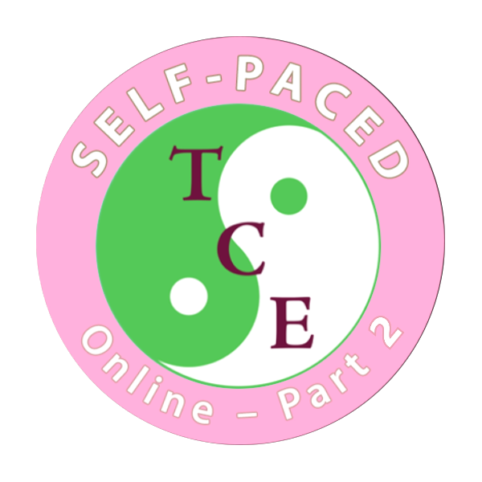

Part 1 learners ready to deepen Tai Chi knowledge and expand clinical application.

FOLLOW-ON COURSE
Adapted Tai Chi Exercises Online Self-Paced (Individual) Course – Part 2
This self-paced follow-on course is designed for individual healthcare professionals who have completed Part 1. Advance your knowledge of Tai Chi principles, gain confidence with the full Shibashi 1 set and explore advanced exercises to enhance your clinical practice – all at your own convenience.
Course preview
Part 2 Video Introduction
Course at a glance
Progress from foundation skills into fuller clinical flow
Part 2 builds on the Part 1 foundation with deeper Tai Chi principles, the full Shibashi 1 set, and more advanced ways to apply adapted movement in clinical and group settings.
Shibashi 1, advanced balance work, weight transfer, gait training, and group facilitation.
Develop a broader exercise repertoire for confident one-to-one or group delivery.
What you will receive
- In-depth video lessons with advanced Tai Chi content and expert guidance
- Detailed downloadable course booklet for ongoing reference
- Multiple-choice quizzes to consolidate your learning
- Unlimited access to recorded lessons
- Monthly one-hour recorded Zoom seminars with Q&A and shared experiences
- Downloadable CPD certificate of Completion
Course Curriculum
Participants will cover:
- Review of fundamental Tai Chi movement principles
- Advanced exploration of the history and philosophy of Tai Chi
- More challenging seated and standing exercises
- Practising and mastering the full 18-movement Shibashi 1 set
- Integrating Tai Chi exercises safely into both individual and group sessions
- Advanced balance, weight transfer and gait training exercises
Flexible learning
Ideal for Busy Professionals
Completed Part 1?
Build on your foundation with advanced techniques
Want to deepen your Tai Chi knowledge?
Explore history, philosophy, and clinical applications
Expand your repertoire
Work with the full 18-movement Shibashi 1 set
Need flexibility?
Access the course anytime, anywhere, at your own pace
Designed for
Physiotherapists, Occupational Therapists, Nurses
Exercise Professionals, Clinical Psychologists
Assistants, Support Workers, Technical Instructors, Students
Complementary Therapists
Tai Chi and Qigong Instructors
Advance your Tai Chi knowledge and transform your clinical practice. Enrol now to explore the full potential of mindful, evidence based movement.
Course feedback
Testimonials
“Tai Chi accessible for everyone. Great course that you can dip in and out of. I like the short history of Tai Chi element. I find the breakdown of the exercises useful, but love when they are all linked together and I can follow along with Ros. My clients love the moves and it’s so easy to adapt for different abilities.”
“The ATCE Part 2 course expands on the knowledge and skills introduced in Part 1. It provides further learning on the history of Tai Chi, the underlying philosophy and examples of exercises to use with patients and clients. It is very thorough, well-researched and easy to follow, and will enable me to to introduce/trial a Tai Chi exercise group in my role as an NHS physiotherapist.”
Note: This course is for individual learners who have completed Part 1 and want to build advanced skills for clinical practice.